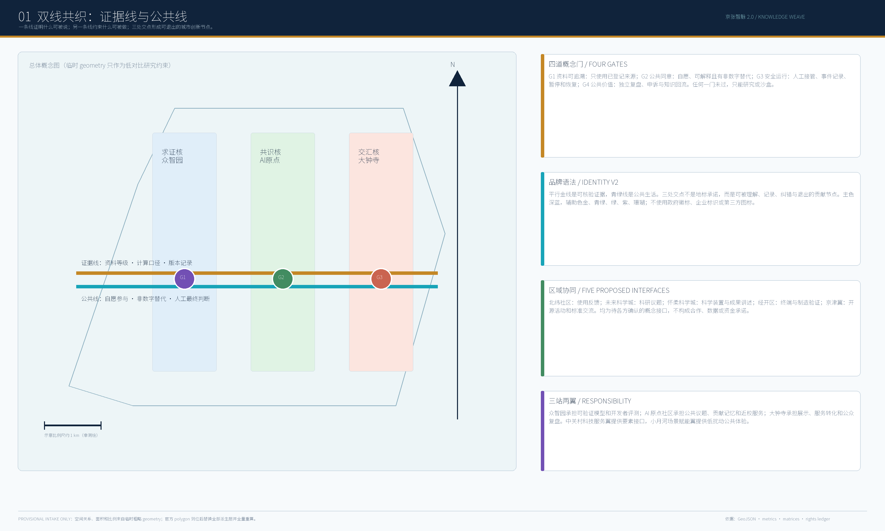
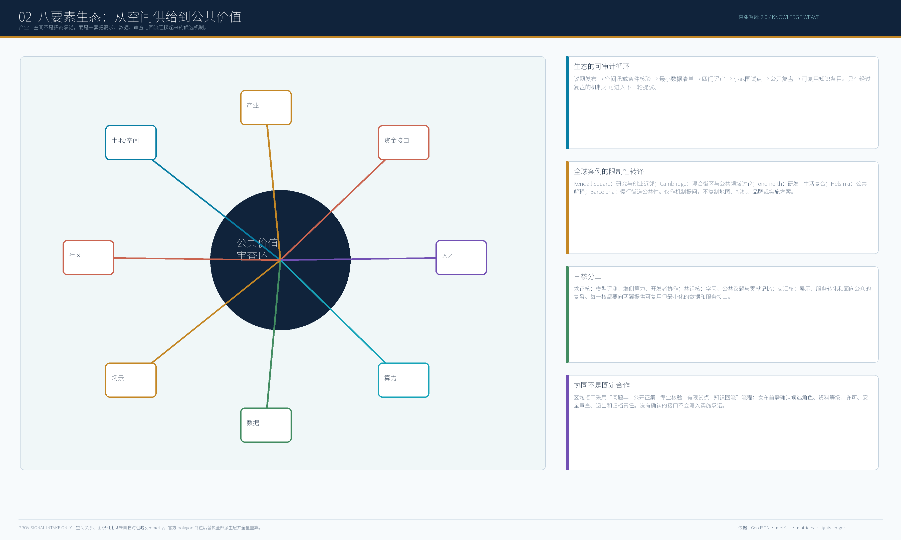
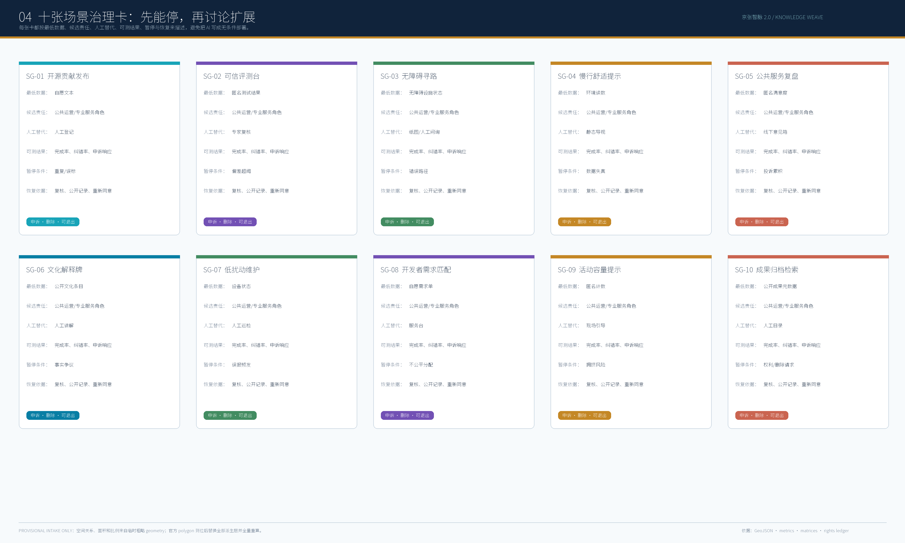
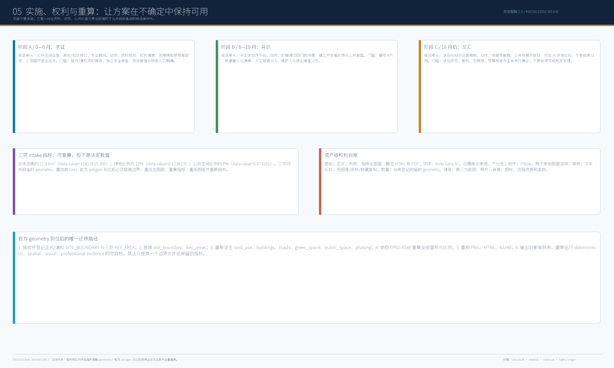

核心指标与边界状态
显示为约值；机器复核保留当前提交 geometry 的数值。
四项本地 gate 必须同时通过。当前边界与重点区均为 provisional constraint；本包只用于内容评审、设计讨论和可复算 intake，不能用于审批、法定控制或精确面积结论。
四道概念门
场景和更新项目不是默认进入实施；缺少条件时留在研究或沙盒。
资料门
来源等级、空间条件、计算口径与版本记录。
同意门
自愿参与、非数字替代、无障碍与可解释。
安全门
最小数据、人工接管、事件响应与暂停。
公共价值门
公平、申诉、公开复盘与知识回流。
总览地图、三层范围与八要素生态
总览地图以提交 geometry 的临时约束表达一脉三核、两翼、四门；三层范围用于议题、总体结构和重点区验证，不构成法定边界。


重点区域、交通慢行、蓝绿公共空间与建筑
三处重点区域使用概念叠合模板，显示交通慢行、蓝绿公共空间、建筑/空间类型、场景、分期和依赖；不是现状普查或工程图。


任务覆盖、自检状态与假设
任务覆盖对应 agent.1-agent.6；自检状态以四项本地 gate 为发布前条件。假设包括临时 geometry、待确认权属、市政、消防、文保、许可、预算与责任主体。
